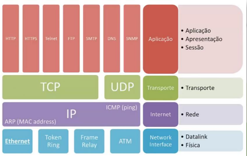
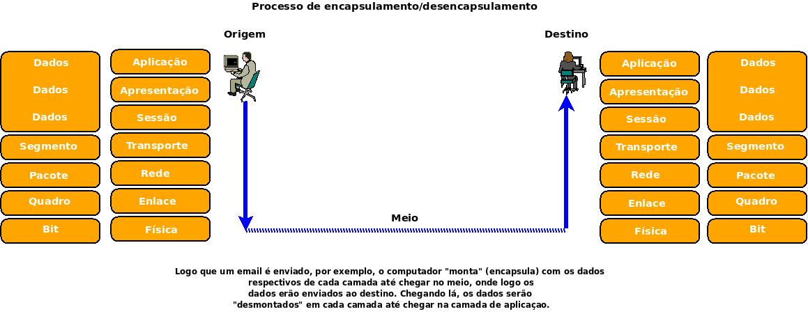
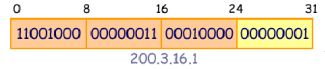
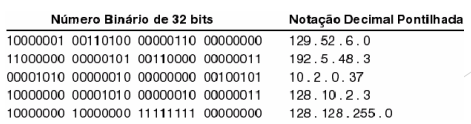

◉ Arquitetura TCP/IP
➤ Também chamada de “Arquitetura Internet”;
➤ É utilizada na interconexão e na interoperação de
diferentes tecnologias de redes;
➤ Foi lançada pelo Departamento de Defesa dos EUA (DARPA)
e escolhida para ser o padrão obrigatório de comunicação
entre os seus diversos sistemas;
➤ Na época do seu lançamento, era a única alternativa para
fazer frente aos protocolos proprietários de fabricantes de
equipamentos, tornando-se, assim, um padrão de fato do mercado.
➤ Tornou-se uma arquitetura de protocolos popular,
especialmente, devido:
➤ Ser roteável: existência de caminhos “alternativos”
para o dado atingir o computador receptor;
➤ Possui arquitetura aberta, o que possibilita que
qualquer fabricante pode adotar sua própria versão do
TCP/IP em seu sistema operacional sem necessidade de
pagamento de direitos autorais a ninguém.

➤ É regido pelo IETF (Internet Enginnering Task Force)
➤ Comunidade internacional aberta que desenvolve as
especificações que se tornam padrões da Internet.
➤ Um protocolo torna-se um padrão Internet através de uma
RFC (Request for Comment)
➤ Publicação que detalha o funcionamento de todos os
aspectos do protocolo proposto.
➤ Uma RFC nunca é modificado
➤ Se um padrão necessitar de atualização de
informações, um novo RFC será gerado com as revisões
necessárias.
◉ Encapsulamento

➤ O encapsulamento é o fluxo dos dados que são trocados
passando por alterações à medida que as redes executam seus serviços.
O processo é iniciado na camada de aplicação e desce até a física para a transmissão,
e na recepção vai da camada física até a camada de aplicação.
➤ O processo do encapsulamento ocorre quando: A camada inferior recebe,
pela interface, os dados da camada superior, adicionando o próprio cabeçalho.
A camada superior envia, por meio do protocolo, os dados para a mesma camada de outro dispositivo.
◉ Endereçamento IP – conceitos básicos:
➤ Na pilha de protocolos TCP/IP, o endereçamento da camada de rede é especificado pelo protocolo de internet(IP)
➤ O padrão IP (versão 4) especifica que a cada host é atribuído um número de 32 bits único
➤ Cada pacote enviado através de uma inter-rede contém o endereço IP de 32 bits da origem e do destino
➤ Deste modo, para transmitir informações através de uma inter-rede TCP/IP, a estação deve conhecer o
endereço IP da estação remota para a qual as informações estão sendo enviadas.

➤ Um endereço IP esta tecnicamente associado a uma
interface de rede
➤ Cada endereço IP tem comprimento de 32 bits
➤ Existem então 232 endereços IPs possíveis
➤ 232 = 4.294.967.296 (> 4 bilhões)
➤ Os endereços são representados em grupos de 8
bits (octetos)
➤ Ex.: 1000001 00110011 11110000 10101010
➤ Os IPs são ”distribuídos” (vendidos) por provedores
de backbone
➤ Conceitualmente, cada endereço IP é dividido em
duas partes: prefixo e sufixo
➤ O prefixo do endereço identifica a rede à qual o
dispositivo (interface) esta associado
➤ Também chamado de número da rede ou network id
➤ O sufixo identifica um dispositivo individual na rede
➤ Também chamado de endereço de host ou host id
➤ Dessa forma, embora as designações dos números
de rede sejam globais, os sufixos podem ser
coordenados localmente
➤ Embora os endereços IPs sejam números de 32 bits, os usuários reramente entram ou lêem os valores em binários
➤ Utiliza-se a notação decimal pontilhada, uma forma que expressa cada seção de 8 bits de um número de 32 bits como um valor decimal e usa-se ponto para separar as seções
